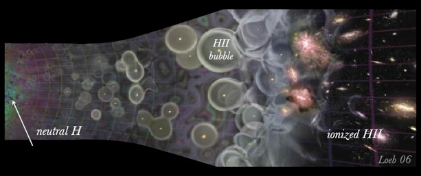
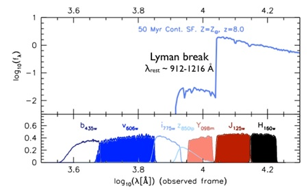
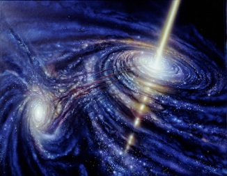
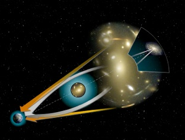
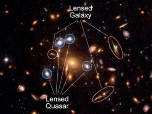
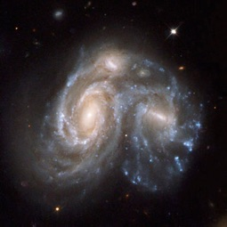
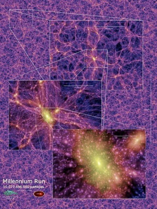

Science

A couple of words:
I’m currently a postdoctoral researcher at the Leibniz-Institut für Astrophysik Potsdam (AIP) in Prof. Dr. Lutz Wisotzki’s group. My current main research revolves around Lyman break and Lyman emitting galaxies at z>6, the spectroscopic confirmation of these (with ground based near-infrared spectrographs like MOSFIRE on Keck and KMOS on VLT, and grism spectroscopy on Hubble), their luminosity function, and the effects these objects have on the general reionization scenario of the Universe. I do this as part of the teams behind The Brightest of Reionizing Galaxies (BoRG) survey and The Grism Lens-Amplified Survey from Space (GLASS) (both described in short below).
I earned my PhD at the Max Planck Institute for Astronomy in Heidelberg, as part of the ELIXIR collaboration (a Marie Curie Initial Training Network funded by the FP7 of the european commission) under the supervision of Prof. Dr. Hans-Walter Rix. I successfully defended my PhD thesis on July 9th 2012 presenting the bulk of my work which mainly focused on quasar variability and the extent of star formation in z~2 mergers as summarized below.
Research interests:
-- The High Redshift Universe and Reionization: --
The epoch of reionization (approximately 400-900 million years after the Big Bang), describes the transition from a neutral to an ionized Universe. This transition is primarily driven by the radiation from the first astronomical source as illustrated by the following artist rendering (time goes left to right). On the very left the last scattering surface of the Cosmic Microwave Background is seen as a green glare. As the Universe starts to expand the matter over densities starts to collapse in the dark matter halo in the still completely neutral Universe. When the first sources ignited they start ionizing there vicinity. This continues until the vast majority of the neutral Hydrogen in the inter-galactic medium has been ionized and radiation can propagate freely between galaxies and down to us.

Faint numerous galaxies at redshift above 6 are believed to be the main ‘ionizers’. Analyzing these galaxies and their general properties aids the understanding of this early epoch of the history of the Universe and has been a main focus of my most recent research. As described in the following I’m mainly using the two large Hubble surveys BoRG and GLASS to explore and investigate the galaxies at the epoch of reionization.
The Brightest of Reionizing Galaxies (BoRG) survey is designed to find the brightest of these extremely distant galaxies at redshift 8. This is done using the so-called dropout technique illustrated in the figure below. As photons bluewards of the Lyman-α line is absorbed at various redshifts by intervening neutral hydrogen in the line-of-sight to the object a significant drop in the continuum radiation appears. With broad band photometry this Lyman break can be probed and samples of galaxies at various redshift can be found. The BoRG survey filter-set (color-filled bands below) is tuned to finding galaxies at redshifts around 8. Note, that the Lyman break is redshifted into the near-infrared for these objects.

Hence, the resulting samples probe and can be used to study the heart of the epoch of reionization and the Universe in one of its very early stages. Recently more than 750 hours(!) of BoRG[9-10] got accepted for observations with Hubble in 2015 which will probe redshifts 9 and 10 moving the BoRG data to higher redshift.
The dropout technique is not 100% air-tight. Hence, spectroscopic follow-up is needed to confirm that the selected galaxies are actually at the assumed redshift. The standard way of doing this is by looking for the Lyman-α emission line at 1216Å (rest). For galaxies at redshift 8 this line falls at ~1.1 μm in the near-infrared. Together with several other groups we (Treu, Schmidt et al. 2013) have been using the near-infrared multi-object spectrograph MOSFIRE on Keck to search for this line at z~8. The sample of objects for out MOSFIRE campaign were chosen among the objects from BoRG presented in Schmidt et al. (2014b). Here we present the redshift 8 luminosity function and show how it can be used to extract information about the epoch of reionization.
More recently our ongoing Grism Lens-Amplified Survey from Space (GLASS) has provided new and exiting data aiding the search for these high redshift sources. Combining the natural telescopes of the gravitational lenses in massive clusters (see below) with Hubble slitless grism spectroscopy, GLASS searches for otherwise un-observable galaxies at high redshift in 10 clusters from the Frontier Fields and CLASH. The first GLASS data arrived on December 24 and 30 2013, as of August 2014 half the data has been taken, and the data keeps ticking in until February 2015. In Schmidt et al. (2014a) we present the first preliminary results from the first data taken on the first cluster back in December 2013/January 2014.
-- Quasar Variability: --
Quasars, the brief phase of high accretion onto the massive black hole in the center of large galaxies, are one of the most impressive periods in the lifetime of large galaxies. Quasars are extremely bright active galactic nuclei (AGN) making them great probes of the very distant (young) Universe. They get their power from the central super massive black holes (SMBH) in galaxies which are accreting huge amounts of material from the surrounding accretion disks of material. When the material falls 'onto' the SMBH it accelerates and starts radiating strongly. It is this strong radiation that we are able to detect here on earth. Since the quasar fuel is not distributed evenly in the accretion disk the amount of in-falling material may vary over time. Quasars are known to vary significantly over a period of several years which is thought to be a consequence of the change in surrounding accretion disk.

Part of my original PhD original thesis plan was to find gravitationally lensed quasars in Pan-STARRS1.
One way to find gravitationally lensed quasars is to first find all quasars and then pick out the ones which have been lensed. With this in mind we said out to develop an efficient algorithm to select quasars in large amounts of data. As Pan-STARRS (and many other surveys) is a multi-epoch survey, our goal was to use the known intrinsic variability of the quasars as a tool of identifying them. By simple means we were able to create a selection criteria based on a structure function formalism which cleanly and efficiently finds the quasars (needles) in 'the haystack' of contaminating stars. The algorithm is presented in Schmidt et al. (2010).
Another interesting aspect of quasars besides the intrinsic flux variability, is the color variability of quasars, i.e. how their colors vary over time as the quasars brighten or dim. In Schmidt et al. (2012) we confirm the well know trend that quasars tend to become bluer when they get brighter. People have been searching for the physical reason of this hardening of the quasar spectra but so far the question remains unanswered. Our study suggest that it is not the change in the accretion disk itself, but rather something like for instance ephemeral hot spots in the accretion disk that give rise to the pronounced quasar color variation.
-- (Strong) Gravitational Lensing: --
Gravitational lensing is one of the most incredible phenomena in the Universe.

Not only does it provide awesome pictures for PR and outreach, but it's also a great laboratory for testing our knowledge about the universe as well as fundamental physics (e.g. general relativity). A gravitational lens is the bending of light by mass via gravitational interaction. Einstein predicted the amount of interaction between light particles and ordinary mass, which in the case of large mass concentrations is detectable. As massive galaxies and clusters of galaxies consist of huge amounts of matter (light and dark) these are well suited as gravitational lenses. Whenever a light source is located in the right position and distance behind the massive foreground object w.r.t. the earth, we observe the magnified (and in the case of strong lensing, multiple) image(s) of the background source.

Thus, a strong gravitational lens not only magnifies your object so you can see fainter (more distant) objects that you would be able to without, it also shows you the same object at several positions on the sky. An incomplete list of the things that (strong) gravitational lensing enables you to study is the content of the Universe (e.g. the ICM and IGM), the content of dark matter in galaxy (cluster) halos, measure the parameters of the cosmological λCDM model (see below) and study galaxies and AGN (the lens sources) out to high redshifts. Based on the quasar variability selection algorithm we developed we have initiated a pilot study search for quasars lenses in SDSS Stripe 82. We have obtained several hours of follow-up observations on our primary targets, but investigations are still ongoing.
-- Galaxies: Mergers and Kinematics --
From above it might be clear that my science revolve around galaxies. The kinematics and formation of galaxies is another interesting aspect of galaxies. As part of work I did in an 'ELIXIR-context' I have been simulating JWST observations of distant galaxy (mergers). Since JWST will provide IFU information it will enable deciphering of the kinematic information of galaxies at unprecedented redshifts.

Until JWST will actually fly, there are several other ongoing surveys which give incredible information about large samples of distant galaxies. One of these is the 3D-HST Hubble legacy survey (P.I. van Dokkum) which I am a collaborator of. Using WFC3 on Hubble 3D-HST, as it is stated in the proposal, "provide rest-frame optical spectra for a complete sample of ~9000 galaxies at 1<z<3.5, when ~60% of all star formation took place, the number density of quasars peaked, the first galaxies stopped forming stars, and the structural regularity that we see in galaxies today must have emerged." So indeed 3D-HST provides a lot of very interesting data to mine.
Within the 3D-HST collaboration we perforemd a survey of the location of star formation in merging galaxies at z~1.5. This was done by mapping the spatial extent of the emission line features in the grism spectra back onto the postage stamp images of the merging galaxies. The results were presented in Schmidt et al. (2013).
-- Dark Matter Cosmology: --
Underneath all of the above lies the theoretical (and observational) fundamental framework that we refer to as the 𝚲-cold-dark-matter (𝚲CDM) model.

I did my master thesis work at the Dark Cosmology Center in Copenhagen, which helped a lot in developing my (at that time already 'budding') interest in general cosmology and dark matter. In my thesis I worked "Towards Understanding Dark Matter Structures" by investigating the rotation of simulated dark matter halos from a theoretical point of view. We found that the dark matter structures are (unfortunately) not always as simple as one might think. In Schmidt et al. (2008) we show that describing the pseudo phase-space density of the dark matter structures as a simply power-law as often done in the literature, only holds for the case where the velocity anisotropy is ignored.
We also found that a perturbed Jeans equation is able to describe the universality of the angular momentum profile of the dark mater structures as presented in Schmidt et al. (2009).
I haven't been working directly on/with 𝚲CDM the last several years. However, working with galaxies in the high redshift Universe completely ignoring dark matter and it’s effects is basically impossible. And lensing - well without dark matter it wouldn't be the same!
Research interests’ last edit: 30.08.2014
Images:
1) Artist impression of the epoch of reionization (and the full evolution of the Universe) from Loeb 2006
2) Illustration of the dropout technique. Adopted from Lorenzoni et al. 2011
3) Artist impression of quasar from http://astronomylinks.wikispaces.com/Quasars
4) Lensing ilustration from Wikimedia Commons
5) Actual lens system. Image Credit: NASA, ESA, K. Sharon (Tel Aviv University) and E. Ofek (Caltech)
6) Image of two merging galaxies form hubblesite.org
7) Millenium dark matter simulation from http://www.mpa-garching.mpg.de/galform/virgo/millennium/